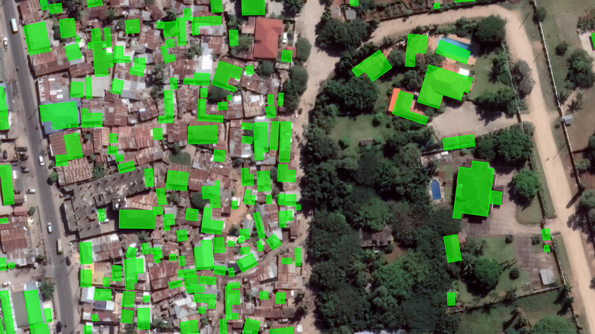
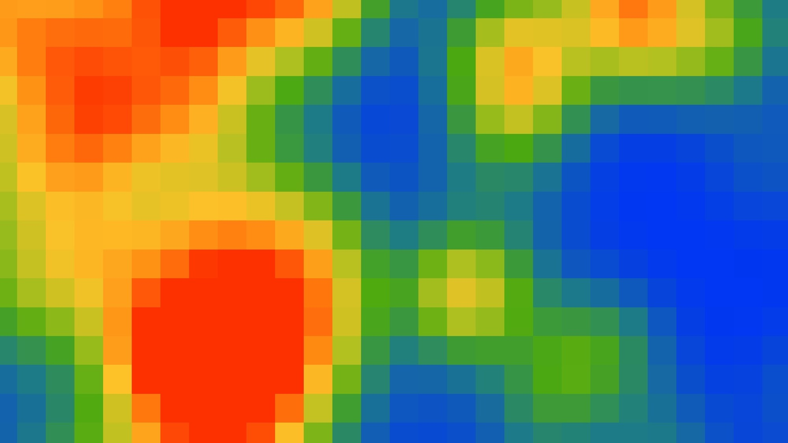
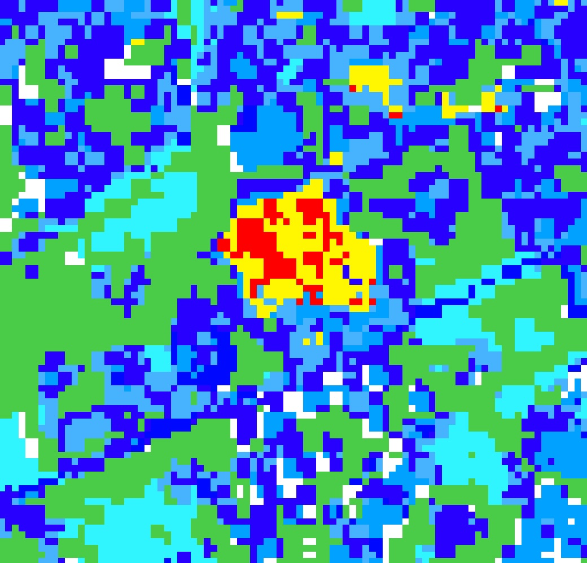

8 Informal Settlement Classification

8.1 Problem Statement
Information on informal settlements is often missing from official statistics, and many times, these populations face greater vulnerability to urban food insecurity, disease, and other health risks. The goal of this project is to map informal settlements in Dar es Salaam, Tanzania, using satellite imagery and machine learning.
If I asked you to describe the differences between the area on the left (informal settlement) and the area on the right (a suburb) in the image above, you would probably note two main things. The first is the difference in building materials: the informal settlement is made up of metal roofs, while the suburban housing uses tile and concrete. The second is the difference in building density: the informal settlement is much more densely packed than the suburban area.
If we had to articulate this using GIS and remote sensing vocabulary, we would say that we could distinguish the two areas based on their spectral characteristics (i.e. the way they reflect light), and their morphologogy. We can quantify both of these using two main sources of data.
The first is Sentinel-2 multispectral imagery, which will be used to identify the spectral characteristics of different land cover types. The second is OpenStreetMap (OSM) building footprints, which we will use to calculate the density of small buildings in the area.
The final application, which I originally developed as part of a collaboration between the Rhodes AI Lab and the World Food Programme, is displayed below:
9 Classification Workflow
The classification process involves several steps, including pre-processing the satellite imagery, training a machine learning model, validating the model’s predictions, and building a user interface. The full earth engine code is available here.
9.1 Pre processing
The first step in the classification process is to pre-process the satellite imagery. This involves several steps, including masking out clouds, calculating the Normalized Difference Vegetation Index (NDVI) and Normalized Difference Built-up Index (NDBI), and using these indices to filter out non-urban areas.
var wards=ee.FeatureCollection("users/ollielballinger/Tanzania_Wards")
// // Sentinel-2 multispectral imagery collection and processing
function maskS2clouds(image) {
var qa = image.select('QA60')
var cloudBitMask = 1 << 10;
var cirrusBitMask = 1 << 11;
var mask = qa.bitwiseAnd(cloudBitMask).eq(0).and(
qa.bitwiseAnd(cirrusBitMask).eq(0))
return image.updateMask(mask)
.select("B.*")
.copyProperties(image, ["system:time_start"])
}
var collection = ee.ImageCollection('COPERNICUS/S2')
.filterDate('2020-01-01', '2020-12-31')
.filter(ee.Filter.lt('CLOUDY_PIXEL_PERCENTAGE', 20))
.map(maskS2clouds)
.median()
var glcm=collection.toUint16().select('B8').glcmTexture({size: 4})
// We can now use the Sentinel-2 imagery to filter out non-urban areas
// using the Normalized Difference Vegetation Index (NDVI) and Normalized Difference Built-up Index (NDBI)
//Normalized Difference Vegetation Index
var ndvi=(collection.select('B8')
.subtract(collection.select('B4')))
.divide(collection.select('B8')
.add(collection.select('B4')))
.select(['B8'],['NDVI'])
// Normalized Difference Built-Up Index
var ndbi=(collection.select('B11')
.subtract(collection.select('B8')))
.divide(collection.select('B11')
.add(collection.select('B8')))
.select(['B11'],['NDBI'])
// add bands from all analysis layers
var image = collection.addBands(Tanzania_Density)//OSM density
.addBands(ndvi)
.addBands(ndbi)
.addBands(glcm)
.clip(wards)
.updateMask(ndvi.lt(0.3).and(ndbi.gt(0)))//filter out non-urban landcover
Once we’ve pre-processed the imagery, we can move on to the next step, which is to calculate the density of small buildings in the area using OpenStreetMap (OSM) building footprints. Here’s what the footprints look like, overlaid on top of the image above.

First, we want to add a column to the OSM building footprints that contains the reciprocal of each building footprint’s area. Then, we can convert the building footprints to a raster and use a Gaussian kernel to calculate the density of small buildings in a given area.
// Using OpenStreetMap (OSM) building footprints
var OSM=ee.FeatureCollection("users/ollielballinger/Tanzania_OSM_clean")
var empty = ee.Image().byte();
//calculate reciprocal of each building footprint's area
var OSM=OSM.map(function(feature) {
return feature.set({area: ee.Number(1).divide(feature.geometry().area()).multiply(100)}).set({const: 1})})
//convert to raster using reciprocal area as the band
var empty = ee.Image().byte();
var OSM_color = empty.paint({
featureCollection: OSM,
color: 'area',
}).unmask(0)
// define kernel
var gaussian = ee.Kernel.gaussian({
radius: 60, units: 'meters', normalize: true, sigma:15
});
// calculate density of small buildings
var density= OSM_color.reduceNeighborhood({
reducer: ee.Reducer.sum(),
kernel: gaussian
})
//i've saved the "density" layer as a raster, imported below. Using it speeds up the RF classification
var Tanzania_Density = ee.Image("users/ollielballinger/Tanzania_Density")When the Gaussian kernel is applied to an are with lots of small buildings (informal settlement), it will register a high value because it’s summing up the values of the pixels in the kernel:

When it is applied to an area with few small buildings, or large buildings spaced far apart (e.g., suburban settlement), it will register a low value:

The end result is a raster that can be used to identify areas with high building density, which are likely to be informal settlements:

Now that we’ve generated input data that allows us to quantify spectral differences and building density, we can move on to the next step, which is to train a machine learning model to classify the image into different land cover types.
9.2 Step 2: Classification
The workflow is very similar to the one employed in last week’s lab, though the nature of the task is slightly different. Here, we are classifying the image into four classes: metal roof, apartment, suburban, and road. The “metal roof” class is used to identify informal settlements.
I’ve drawn polygons for each of the classes, which you can see under the “Geometry Imports” tab on the top left of the code editor:

These polygons are used to generate training data for the machine learning model; using the ee.FeatureCollection.randomPoints function, I’ve generated 500 random points for each class, and assigned a class label to each point.
//input bands used for classification
var bands = ['B2', 'B3', 'B4', 'B8', 'B8A', 'B11', 'B12',
'NDVI','B8_contrast',
'constant_sum' // this is the OSM density layer
]
var metal_roof_points=ee.FeatureCollection.randomPoints(metal_roof_poly, 500).map(function(i){
return i.set({'class': 0})})
var apartment_points=ee.FeatureCollection.randomPoints(apartments_poly, 500).map(function(i){
return i.set({'class': 1})})
var suburban_points=ee.FeatureCollection.randomPoints(suburban_poly, 500).map(function(i){
return i.set({'class': 2})})
var road_points=ee.FeatureCollection.randomPoints(road, 500).map(function(i){
return i.set({'class': 3})})
// Create a single feature collection from the four classes
var sample=ee.FeatureCollection([metal_roof_points,
suburban_points,
apartment_points,
road_points])
.flatten()
.randomColumn();
// assign 70% of training points to validation
var split=0.7
var training_sample = sample.filter(ee.Filter.lt('random', split));
var validation_sample = sample.filter(ee.Filter.gte('random', split));
// take samples from image for training and validation
var training = image.select(bands).sampleRegions({
collection: training_sample,
properties: ['class'],
scale: 10,
});
var validation = image.select(bands).sampleRegions({
collection: validation_sample,
properties: ['class'],
scale: 10
});
// Train a Random Forest classifier
var rf1 = ee.Classifier.smileRandomForest(100)
.train(training, 'class');
// Apply the RF classifier to the image
var rf2 = image.classify(rf1);
The process of training a model in this way is iterative. I started with a binary classification problem (informal settlement vs. everything else), but it kept mixing up informal settlements with general high density urban areas such as the central business district. I then added the “apartment”, “suburban”, and “road” classes to the training data, which helped the model to better distinguish between informal settlements and other urban areas. This basically involves telling the algorithm explicitly “NO. This is not an informal settlement. It’s a different type of urban area.” After a few iterations, the model was able to distinguish between the four classes with a high degree of accuracy.
9.3 Step 3: Validation
Once again, a crucial step in the process of classification is to validate the model’s predictions. This is done by comparing the model’s predictions to the validation set we created earlier.
// Calculate the confusion matrix for the training data
var trainAccuracy = rf1.confusionMatrix();
print('Resubstitution error matrix: ', trainAccuracy);
print('Training overall accuracy: ', trainAccuracy.accuracy());
// Calculate the confusion matrix for the validation data
var validated = validation.classify(rf1);
var testAccuracy = validated.errorMatrix('class', 'classification');
var consumers=testAccuracy.consumersAccuracy()
print('Validation error matrix: ', testAccuracy);
print('Validation overall accuracy: ', testAccuracy.accuracy())
print('Validation consumer accuracy: ', consumers);
// Consumer's accuracy can be interpreted in a sentence as follows:
print(ee.Number(consumers.get([0,0])).multiply(100),'% of the areas identified as informal settlements \nin the classification are actually informal settlements \n(according to the verification data)')Once again, the model reports high accuracy statistics. Remember, however, that spatial autocorrelation is probably inflating these statistics significantly; even though we are separating the data into training and validation sets, the validation points are still likely to be extremely close to the training points, and the model is likely to be overfitting to the training data.
It’s always good to do some qualitative validation too– zip around the map and see if the model’s predictions make sense, pretend you’re the end user. Doing so reveals that the classification process is indeed working quite well. Consider this small pocket of informal settlements in the north of the city:

It’s nestled in a large suburban area, and would be very easy to miss if you were, for example, running a food aid programme using only official statistics. The model that we trained successfully detects it as an informal settlement, and we didn’t train the model anywhere near this settlement:

Now, we’ve finished the classification portion of this lab. The next step is to build a user interface that will allow users to interact with the model and get statistics on informal settlements in a given area. Before moving on to that, try your hand at the following exercises.
9.4 EXERCISES
Try running the classification procedure without the OSM density layer (you can do this by removing “constant_sum” from the list of bands used to train the model.). How does the model’s accuracy change? What if you only use the OSM density layer?
Try conducting the same classification for Nairobi, Kenya. You’ll need to create your own geometry imports to train the model, and load building footprints from a different source:
var feature = ee.FeatureCollection('projects/sat-io/open-datasets/MSBuildings/Kenya')
9.5 Step 4: Build a User Interface
The user interface in this application is again similar to last week’s, in that it involves getting areal statistics for a given area. This week’s objective will be to get the estimated number of informal settlement dwellings in a given ward (these are administrative units in Tanzania, similar to boroughs in London).
We’ll begin by doing a couple things that will help speed things up later; Similar to last week, I’ve stored the output of the machine learning model as an image (it’s called ‘Classified2’ in the code below), and I’ve also stored the OSM building footprints as a raster. This means that we can skip the classification step and the OSM density calculation step when we run the app.
var Classified = ee.Image("users/ollielballinger/Tanzania_Classified"),
Tanzania_Density = ee.Image("users/ollielballinger/Tanzania_Density"),
Classified2 = ee.Image("users/ollielballinger/Tanzania_RF_OSM_Sentinel"),
wards=ee.FeatureCollection("users/ollielballinger/Tanzania_Wards"),
subwards=ee.FeatureCollection("users/ollielballinger/Tanzania_SubWards")
///this part generates the estimated number of informal settlement dwellings in a ward
//create binary raster from the RF+OSM layer, 1=Informal settlement, 0=everything else
var is=Classified2.gt(3).and(Classified2.lt(6))
// create a masked version of the binary raster (i.e. remove all 0 values so that we are left with only the informal settlements)
var is2=is.updateMask(is.neq(0))
// reduce the masked raster to vectors, and filter out small areas
var vectors = is2.reduceToVectors({
geometry: wards,
scale: 5,
geometryType: 'polygon',
eightConnected: true,
labelProperty: 'zone',
maxPixels:1653602926
}).map(function(feature) {
return feature.set({area: feature.geometry().area(10)})
})
.filter(ee.Filter.gt('area',10000))
//spatially join this vector with the filtered OSM footprints
var spatialFilter = ee.Filter.intersects({
leftField: '.geo',
rightField: '.geo',
maxError: 10
});
var saveAllJoin = ee.Join.saveAll({
matchesKey: 'zone',
outer:false
});
//join the vectors with the OSM footprints. This gives us a feature collection of just the building footprints that are in informal settlements
var buildings = saveAllJoin.apply(OSM, vectors, spatialFilter)
// add palettes for visualization
var Vis= [
'49cc47',
'0008ff',
'2ff5ff',
'ff0000',
'fff700',
'ffffff',
'47b2ff',
'2700ff',
'00a1ff']
var palette =["0034f5","1e7d83","4da910","b3c120","fcc228","ff8410","fd3000"]
// create outlines for wards and subwards
var subwards_outline = ee.Image().byte().paint({
featureCollection: subwards,
width: 1
});
var wards_outline = ee.Image().byte().paint({
featureCollection: wards,
width: 2
});
// function to add the core layers to the map
function core_layers(){
Map.addLayer(Classified.clip(wards),{min:1, max:9, palette: Vis, format:'png'},'RF Sentinel',false);
Map.addLayer(Classified2.clip(wards),{min:1, max:9, palette: Vis, format:'png'},'RF Sentinel+OSM');
Map.addLayer(subwards_outline,{color:'black'}, 'Sub-Wards',false);
Map.addLayer(image, {bands: ['B4', 'B3', 'B2'], min: 0, max: 0.3}, 'Sentinel-2', false)
Map.addLayer(Tanzania_Density,{palette:palette, min:0, max:1}, 'Reciprocal Area Density', false);
Map.addLayer(wards_outline,{color:'red'}, 'Wards');
}
//run the function
core_layers()OK. Now that we’ve pre-loaded the layers, we can start building the user interface. The first thing we’ll do is create a main panel that will contain all the other elements of the interface. This panel will be positioned in the top-right corner of the map, and will contain a title, some introductory text, and a button that will allow the user to get statistics on informal settlements in a given ward by clicking on the map.
// create the main panel
var console = ui.Panel({
layout: ui.Panel.Layout.flow('vertical'),
style: {
position: 'top-right',
padding: '8px 15px',
width: '350px'
}
});
// Create legend title
var title = ui.Label({
value: 'Informal Settlement Mapper',
style: {
fontWeight: 'bold',
fontSize: '18px',
margin: '0 0 4px 0',
padding: '0'
}
});
// add text labels
var intro1= ui.Label('This tool uses machine learning to map informal settlements in Dar es Salaam. Data layers can be toggled using the "Layers" tab.', {whiteSpace: 'wrap'})
var stats_label= ui.Label('To explore Ward-level data on informal settlements, click \"Ward Statistics\": ', {whiteSpace: 'wrap'})
//home button config. this will be used to return to the main panel after the user has clicked on the map and gotten ward-level statistics
var home_button = ui.Button({
style:{stretch: 'horizontal'},
label: 'Home',
onClick: function(){
home()
Map.layers().get(1).setShown(true)
Map.remove(Map.layers().get(6))
}
})Next, we’ll create a button that will allow the user to get statistics on informal settlements in a given ward by clicking on the map. This button will be configured to display a panel with the statistics when clicked. First, we define a
Upon clicking the button and then clicking on the map, the user will be shown the estimated number of informal dwellings in the selected ward, as well as the total number of buildings and the percentage of the ward that is covered by informal settlements. This is achieved by using the Map.onClick function to get the coordinates of the user’s click, and then using the ee.Join class to join the building footprints with the ward polygons.
//"Ward Statistics" button config. This
var ward_stats = ui.Button({
style:{stretch: 'horizontal'},
label: 'Ward Statistics',
onClick:
function ward_stats_panel() {
Map.setOptions("Satellite")
// add the "buildings" layer to the map, which we computed earlier and containts the building footprints in informal settlements
Map.addLayer(buildings,{color:'red', max:1}, 'Informal Dwellings',false)
console.clear()
console.add(title)
console.add(ui.Label('Click on the map to get a rough estimate of the number of informal dwellings in a given Ward.', {whiteSpace: 'wrap'}))
// select a ward to return statistics on by clicking on the map
Map.onClick(function(coords) {
Map.layers().get(1).setShown(false)
ward_stats_panel()
//select ward based on click
var point = ee.Geometry.Point(coords.lon, coords.lat);
var saveAllJoin = ee.Join.saveAll({
matchesKey: 'Ward_Name',
outer:true
});
// join the coordinates of the clicked point with the ward polygons to get the name of the ward
var ward_name = ee.Feature(ee.List(saveAllJoin.apply(point, wards, spatialFilter).first().get("Ward_Name")).getInfo()[0]).get('Ward_Name')
//run the function to get statistics on the selected ward
ward_stats(ward_name)
//ward_name.evaluate(function(val){ward_name.setValue(val)});
})
// get ward level IS/normal building counts
function ward_stats(ward_name){
var ward=wards.filter(ee.Filter.eq('Ward_Name', ward_name))
var centroid=ward.geometry().centroid()
// count number of OSM features within the bounds of the IS vector in the selected ward
var sum=buildings.filterBounds(ward).size()
//count all OSM features in ward
var allBuildings=OSM.filterBounds(ward).size()
//get % area of ward landcover that is IS
var mean = ee.Number(ee.Image(is).reduceRegions({collection: ward, reducer: ee.Reducer.mean()}).first().get('mean')).multiply(100)
var sumLabel = ui.Label({
value: 'Calculating...'
})
var allLabel = ui.Label({
value: 'Calculating...'
})
var meanLabel = ui.Label({
value: 'Calculating...'
})
//grab server-side info
sum.evaluate(function(val){sumLabel.setValue(val)});
allBuildings.evaluate(function(val){allLabel.setValue(val)});
mean.evaluate(function(val){meanLabel.setValue(val)});
console.add(ui.Label({
value: ward_name.getInfo(),
style: {
fontWeight: 'bold',
fontSize: '18px',
padding: '0'}}))
//add labels and values
console.add(ui.Label('Total number of buildings:', {whiteSpace: 'wrap'}))
console.add(allLabel, {whiteSpace: 'wrap'})
console.add(ui.Label('Estimated number of informal dwellings:', {whiteSpace: 'wrap'}))
console.add(sumLabel, {whiteSpace: 'wrap'})
console.add(ui.Label('Percent of ward under informal settlement:', {whiteSpace: 'wrap'}))
console.add(meanLabel, {whiteSpace: 'wrap'})
//return IS footprint layer, clear old layer
Map.remove(Map.layers().get(6))
Map.addLayer(buildings.filterBounds(ward),{color:'red', max:1}, 'Informal Dwellings')
Map.remove(Map.layers().get(6))
//zoom to ward center
Map.setCenter(ee.Number(centroid.coordinates().get(0)).getInfo(),
ee.Number(centroid.coordinates().get(1)).getInfo(), 15);
}
console.add(home_button)
}
});There’s a lot going on here, so let’s break it down.
First, we define a function called ward_stats_panel that will be called when the user clicks the “Ward Statistics” button. This function will clear the main panel, add a title and some introductory text giving the user instructions on what to do next, and then add a click event to the map. This click event will get the coordinates of the user’s click, and then use ee.Join to get the name of the ward that the user clicked on.
Next, we define a function called ward_stats that will be called when the user clicks on the map. This function takes the name of the ward returned by the ward_stats_panel function to isolate the ward polygon, and then uses the size and reduceRegions functions to get the estimated number of informal dwellings in the ward, the total number of buildings, and the percentage of the ward that is covered by informal settlements. These statistics are then added to the main panel, the map is zoomed to the center of the ward, and the corresponding informal settlement building footprints are added to the map.
This set of functions comprises the core functionalities of the user interface.
One of the last things on the agenda is to make a legend panel that lets the user know what the colors on the map represent. This is done using the ui.Panel class, which allows us to create a panel with a title and a series of rows, each of which contains a color and a label.
// set position of panel
var legend = ui.Panel({
style: {
position: 'bottom-left',
padding: '8px 15px'
}
});
// Create legend title
var legendTitle = ui.Label({
value: 'Legend',
style: {
fontWeight: 'bold',
fontSize: '18px',
margin: '0 0 4px 0',
padding: '0'
}
});
// Creates and styles 1 row of the legend.
var makeRow = function(color, name) {
// Create the label filled with the description text.
var description = ui.Label({
value: name,
style: {margin: '0 0 4px 6px'}
});
// return the panel
return ui.Panel({
widgets: [colorBox, description],
layout: ui.Panel.Layout.Flow('horizontal')
});
};
// set position of panel
var legend = ui.Panel({
style: {
position: 'bottom-left',
padding: '8px 15px'
}
});
// Create legend title
var legendTitle = ui.Label({
value: 'Legend',
style: {
fontWeight: 'bold',
fontSize: '18px',
margin: '0 0 4px 0',
padding: '0'
}
});
// Add the title to the panel
legend.add(legendTitle);
// Creates and styles 1 row of the legend.
var makeRow = function(color, name, border) {
// Create the label that is actually the colored box.
var colorBox = ui.Label({
style: {
backgroundColor: '#' + color,
// Use padding to give the box height and width.
padding: '7px',
margin: '0 0 4px 0',
border: '3px solid #'+border
}
});
// Create the label filled with the description text.
var description = ui.Label({
value: name,
style: {margin: '0 0 4px 6px'}
});
// return the panel
return ui.Panel({
widgets: [colorBox, description],
layout: ui.Panel.Layout.Flow('horizontal')
});
};
// palette with the colors
var palette_vis= [
'49cc47',
'0008ff',
'fff700']
// name of the legend
var names = ['vegetation','urban','informal settlement'];
legend.add(makeRow('49cc47', 'vegetation', '000000'));
legend.add(makeRow('2ff5ff', 'urban','0008ff'));
legend.add(makeRow('fff700', 'informal settlement','ff0000'));Finally, we can define a function called home that will center the view of the map on Dar es Salaam, set the map to a hybrid view, and add the requisite widgets to our main panel. This function will be called when the app is first loaded, and will also be called when the user clicks the “Home” button. We will finish by adding the legend and main panel to the map, and running the home function to initialize the app.
// home panel config
var home= function(){
Map.setCenter(39.2854, -6.8167, 14)
Map.setOptions("Hybrid")
console.clear()
console.add(title);
console.add(intro1);
console.add(stats_label)
console.add(ward_stats);
}
// add legend, main panel with home configuration
Map.add(legend);
Map.add(console)
home()